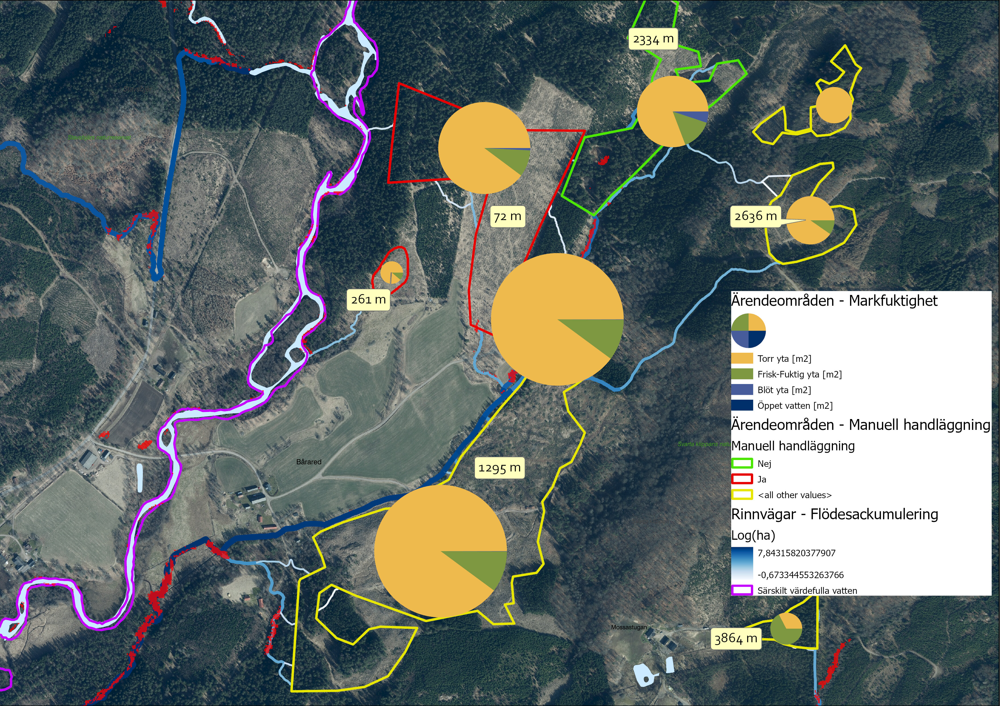
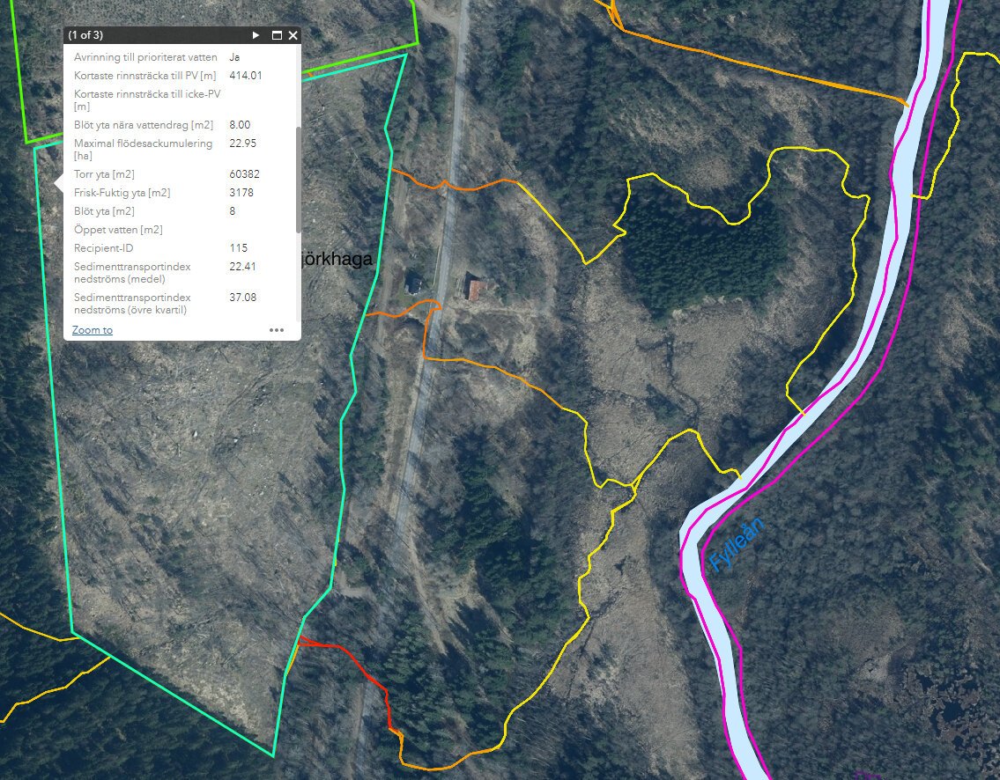

Introduktion
Det här dokumentet beskriver ett verktyg som tagits fram inom projektet Grip on Life och som ska utgöra verksamhetsstöd i Skogsstyrelsens handläggning av avverkningsärenden inom och i anslutning till prioritierade vattendrag som kan omfattas av t.ex. Natura 2000.
Grundläggande är att verktyget ska ge ökad förståelse för hur vatten rör sig i landskapet och pekar ut ärenden/områden där det finns förhöjd risk för negativ påverkan av vattenkvalitet. Detta är egenskaper som är värdefulla i många av Skogsstyrelsens olika verksamheter och uppdrag.
Den uppenbara nyttan med verktyget är att använda det i Skogsstyrelsens tillsynsverksamhet. Dels för att förfina den automatiska analys som görs av ärenden men även tillhandahålla ett bättre visuellt underlag i de ärenden som handläggs manuellt. Ett tydligt visuellt underlag underlättar samverkan med andra myndigheter och skogliga aktörer.
Bakgrund
Påverkan av vattenmiljöer vid skogsbruksåtgärder
En betydande risk för negativ påverkan på vattendrag vid avverkning är körskador orsakade av skogsmaskiner som kan frigöra slam, humus, näring och tungmetaller som rinner ut i känsliga vattendrag. Områdets egenskaper som t.ex. jordart, markfuktighet och lutning är exempel på faktorer som avgör hur stor risken är.
Skogsstyrelsens befintliga handläggarstöd
Idag identifieras risken för negativ påverkan på känsliga vattendrag av Skogsstyrelsens analysmodul. Avverkningsanmälningar faller ut i analysen om området överlappar en buffertzon för särskilt värdefulla vatten, d.v.s. en enkel överlagringsanalys. För att i högre grad kunna klassificera de hydrologiska riskerna automatiskt, och därmed avlasta den manuella handläggningen, uppstår ett behov av ett verktyg som kan beskriva de hydrologiska faktorerna mer noggrant.
 Figur 1.A. Med en enkel buffertzon kan ärendeområden som ligger i närheten av
känsliga vattendrag hittas, men den reella risken kan bero på faktorer som inte
fångas. I det här exemplet kan en hydrologisk modell beräkna att ett vattendrag
som passerar området rinner via en vägtrumma ner mot recipienten. Bakgrundsbild
skapad utifrån Markhöjdmodell Nedladdning, grid 1+, Topografisk webbkarta
Visning, skiktindelad och Ortofoto färg, 0.5 m © Lantmäteriet.
Figur 1.A. Med en enkel buffertzon kan ärendeområden som ligger i närheten av
känsliga vattendrag hittas, men den reella risken kan bero på faktorer som inte
fångas. I det här exemplet kan en hydrologisk modell beräkna att ett vattendrag
som passerar området rinner via en vägtrumma ner mot recipienten. Bakgrundsbild
skapad utifrån Markhöjdmodell Nedladdning, grid 1+, Topografisk webbkarta
Visning, skiktindelad och Ortofoto färg, 0.5 m © Lantmäteriet.
Vad kan verktyget göra?
Verktyget utför hydrologisk analys och överlagringsanalys för att ta fram följande produkter:
- Hydrologisk information kopplat till avverkningsärendeområde
- Konnektivitet med prioriterade vattendrag (recipient)
- Kortaste rinnsträcka till recipient(er)
- Blöt mark nära genomströmmande vattendrag
- Maximal flödesackumulering
- Fördelning av markfuktighetsklasser
- Sammanställning av hydrologiska egenskaper för nedströms rinnvägar
- Hydrologiska egenskaper för nedströms rinnvägar, från avverkningsområde till recipient
- Konnektivitet med prioriterade vattendrag
- Genomsnittligt sedimenttransportindex längs rinnvägssegment
- Genomsnittlig lutning längs rinnvägssegment
- Genomsnittlig flödesackumulering längs rinnvägssegment
En mer detaljerad beskrivning av de beräknade egenskaperna ovan beskrivs i avsnittet Utdata.
 Figur 1.B. Exempel på visualisering av bl.a. rinnvägar med flödesackumulering, längd på rinnsträckor från avverkningsområde till recipient samt fördelning av markfuktighetsklasser. Resultat skapat utifrån SLU Markfuktighetskarta och Markhöjdmodell Nedladdning, grid 1+ © Lantmäteriet. Bakgrundsbild: Topografisk webbkarta Visning, skiktindelad och Ortofoto färg, 0.5 m © Lantmäteriet.
 Figur 1.C. Exempel på visning av hydrologisk information kopplat till avverkningsområde samt symbolisering av sedimenttransportindex längs rinnvägar. Resultat skapat utifrån SLU Markfuktighetskarta och Markhöjdmodell Nedladdning, grid 1+ © Lantmäteriet. Bakgrundsbild: Topografisk webbkarta Visning, skiktindelad och Ortofoto färg, 0.5 m © Lantmäteriet.